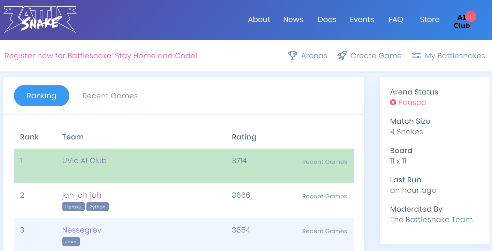

Battlesnake:
The UVic AI Club's submission for the 2020 Battlesnake Stay Home and Code event was very successful. Of over 80 very talented contestants, we became the rookie league arena champions!

The next step will be to attend Battlesnake 2021 under the veteran division. We plan to make significant improvements to our design which will aid us in performing better during the tournament portion of the competition.
Chatbot:
Our home made chat-bot is designed to add more value to our website. Our model was inspired by the Russian chat-bot p-bot. We are currently developing the database to house and sort responses and behaviours.
Neurotech:
The UVic AI Club has been invited to work in collaboration with the UVic Neurotech Club to participate in the 2020 Neurotech competition. Currently, we are working to model neurological data collected through sensors to determine thresholds of concentration. Check out the Neurotech website for more details.